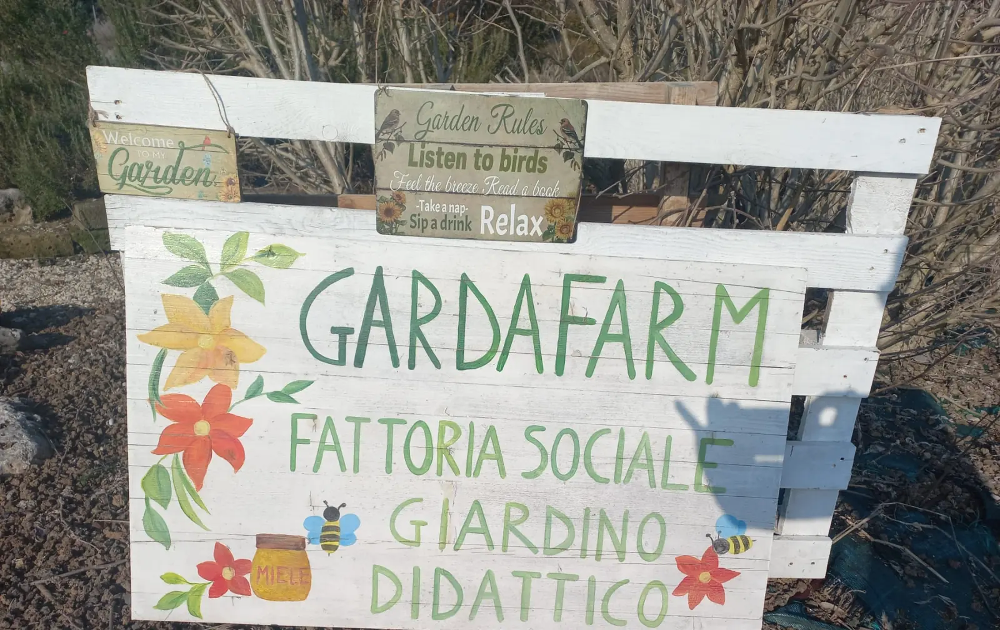
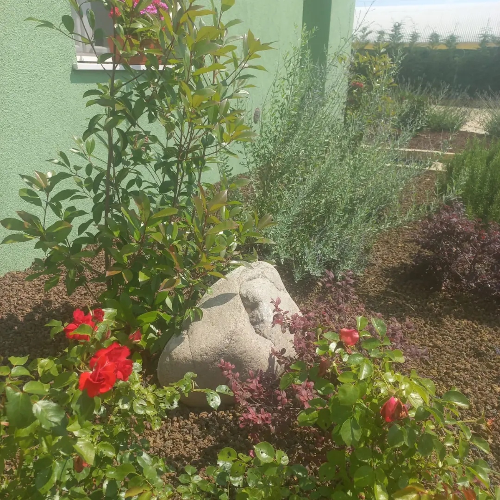
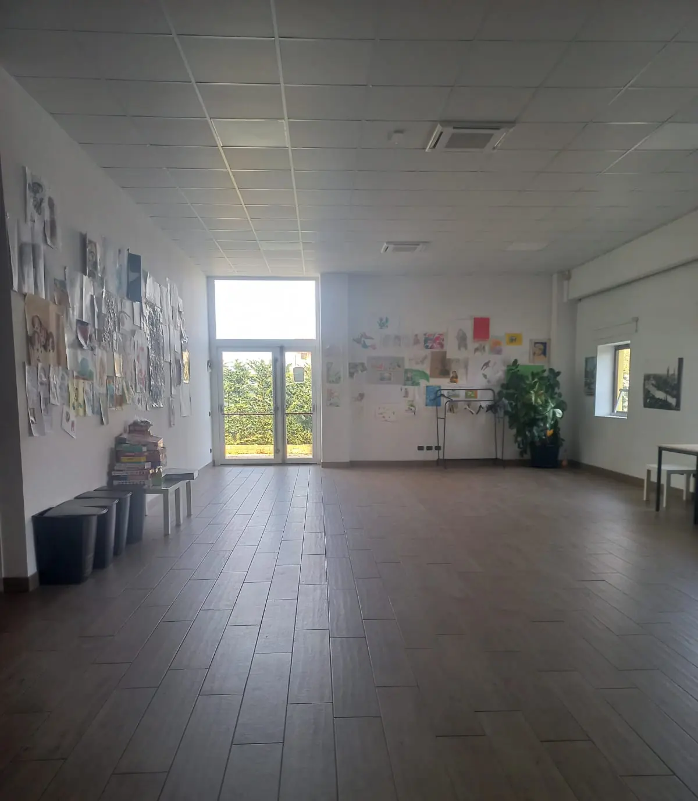

Villafranca
e socialeVia Paroline 7
Villafranca di Verona



Imparare facendo,
nel verde
Una fattoria didattica tra natura, relazioni ed esperienze su misura. Un luogo accogliente e immerso nel verde, pensato per progetti educativi, attività con gli animali ed eventi speciali in un contesto autentico e rigenerante.
Qui trovi
Fattoria didattica
Per imparare facendo, con attività pratiche e coinvolgenti. Ideale per scuole, famiglie, educatori e realtà inclusive.
Fattoria sociale
Proposte ludico-creative e percorsi per il benessere, pensati per valorizzare ogni persona, a ogni età.
Centro IAA
Interventi Assistiti con gli Animali guidati da professionisti: il legame con l'animale diventa crescita e cura.
Spazi polifunzionali
Sale e ambienti versatili per laboratori, compleanni, corsi e momenti da condividere nella natura.
Asinelli, galline, conigli e api diventano compagni di scoperta e di cura.
Interventi
assistiti
con gli animali
La sede di Villafranca è centro specializzato per gli Interventi Assistiti con gli Animali, riconosciuto dal Ministero della Salute e iscritto al Registro delle Fattorie Sociali del Veneto.
- ◆Bambini e ragazziScuole, centri educativi, famiglie
- ◆Adulti e gruppiAnche con fragilità
- ◆Realtà inclusiveEducative e terapeutiche


Mani
nella terra

Animali
Stalle, galline, conigli e asinelli: si impara ad accudirli e a vivere il ritmo autentico della campagna.


Lavanda
Raccolta e lavorazione della lavanda, creazione di bouquet garni e laboratori con il sale aromatico.


Miele
Laboratori con il miele e attività sensoriali e stagionali tra vino, frutta e orto.
Sale
per eventi
Spazi flessibili, moderni e immersi nel verde, per organizzare eventi privati o attività professionali in un contesto tranquillo e curato.

- ◆Feste e compleanniPer bambini e adulti
- ◆Corsi e laboratoriIncontri e formazione
- ◆Giornate per gruppiAnche aziendali
- ◆Eventi educativiE ricreativi
Tutte al piano terra, accessibili e luminose; circondate da spazi verdi con giochi, piante aromatiche e orto; dotate di doppi servizi igienici (accessibili in sedia a rotelle), tavoli, sedie e ampie vetrate. Disponibili anche con il maltempo, con ampio parcheggio interno e area videosorvegliata.
Prenota una sala